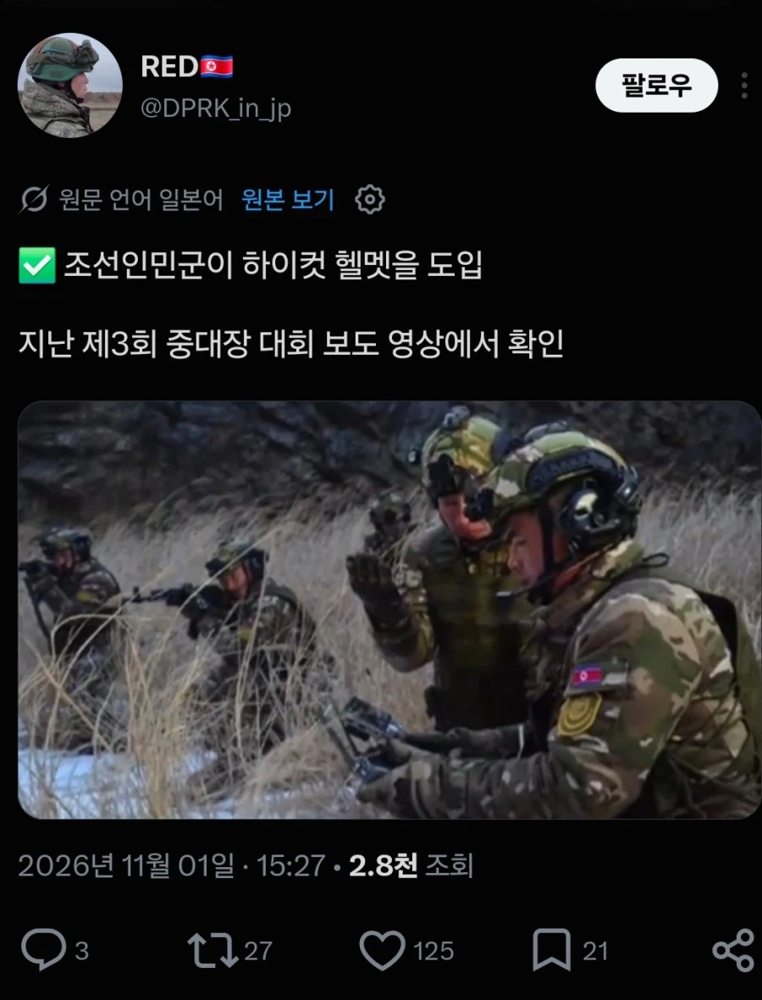
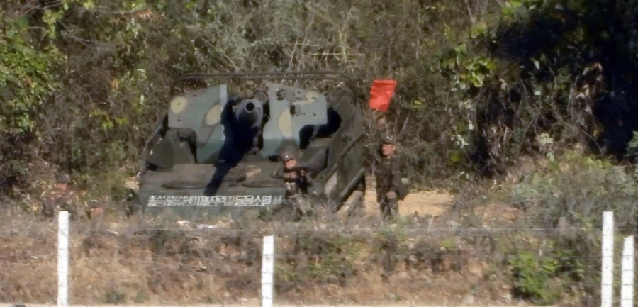
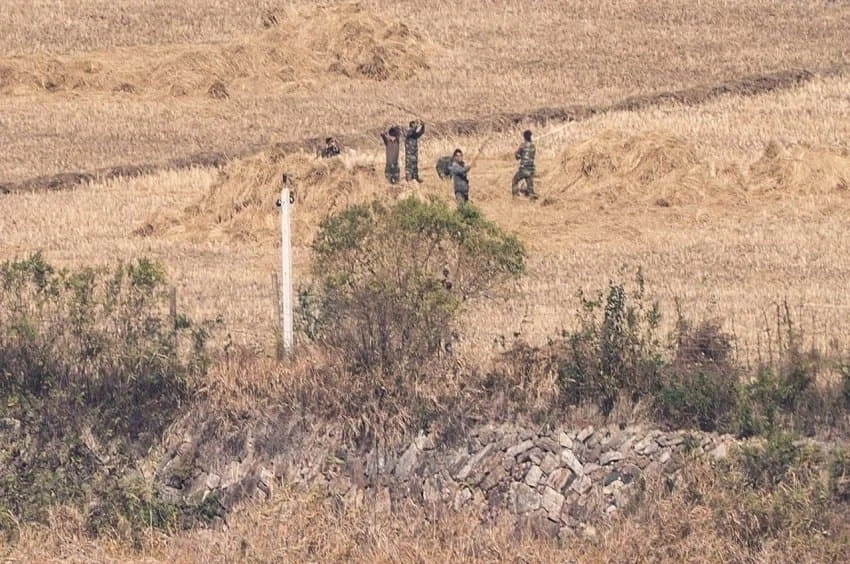
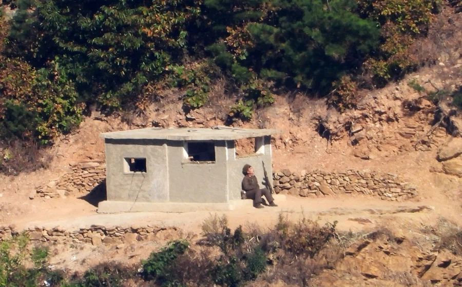

김정은 앞에 서는 상황이 생기면 해당 부대에게 평양 방어용으로 보관해 둔 현대식 장비 착용시킴.
중국 민간 기업에서 만든 거라고 해도, 제대로 된 거 찾으면 군용으로도 쓸만함
(러시아-우크라이나 전쟁에서도 중국제 민수용 장구류 양측 다 많이 사용함)

소련제 ATS-59에 122mm 올린 오픈탑 자주포, 59라는 숫자에서 알 수 있듯이 냉정 초반기 물건이다

예초기 같은 거 없어서 도리깨로 볏대 제거하는 모습

자주포 운용복은 나름 신형 방탄복과 군복 챙겨준 것과 달리, 경계병은 88식 보총에 구형 방한복을 입고 있다
(사진은 없지만 다음 장면 보면 화장실 가는지 자리를 비우는데 총을 놔두고 그냥 감)
오히려 가장 필요할 것 같은 국경 인근은 북한이 봤을 때
중요도 떨어진다는 이유로 보급 우선 순위에서 멀어진 상태임
국경은 어차피 죽을거니?